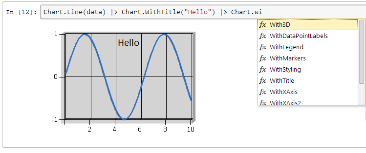

IfSharp
IfSharp is an F# implementation for iPython. It works with iPython Notebook 1.x and 2.x.
Screenshot

Automatic references
IfSharp automatically references the following assemblies:
- IfSharp.Kernel.dll
- System.Data.dll
- System.Windows.Forms.DataVisualization.dll
- FSharp.Data.TypeProviders.dll
- FSharp.Charting.dll
- fszmq.dll
Automatic namespaces
IfSharp automatically opens the following namespaces:
- FSharp.Charting
- IfSharp.Kernel
- IfSharp.Kernel.Global
More documentation
Sin chart wave example
This example shows you how to perform charting using FSharp.Charting
1: 2: 3: 4: 5: 6: 7: 8: 9: 10: 11: 12: 13: 14: 15: 16: 17: 18: 19: |
open System // start at -PI and finish at PI let startX = -Math.PI let endX = Math.PI // the data let data = [| startX..0.1..endX |] |> Array.map (fun x -> (x, sin(x))) // display a line graph Chart.Line(data) |> Chart.WithXAxis(true, "", 3.2, -3.2) |> Chart.WithYAxis(true, "", 1.0, -1.0) |> Display // display the latex Util.Math("f(x) = sin(x)") |> Display |
namespace System
val startX : float
Full name: Index.startX
Full name: Index.startX
type Math =
static val PI : float
static val E : float
static member Abs : value:sbyte -> sbyte + 6 overloads
static member Acos : d:float -> float
static member Asin : d:float -> float
static member Atan : d:float -> float
static member Atan2 : y:float * x:float -> float
static member BigMul : a:int * b:int -> int64
static member Ceiling : d:decimal -> decimal + 1 overload
static member Cos : d:float -> float
...
Full name: System.Math
static val PI : float
static val E : float
static member Abs : value:sbyte -> sbyte + 6 overloads
static member Acos : d:float -> float
static member Asin : d:float -> float
static member Atan : d:float -> float
static member Atan2 : y:float * x:float -> float
static member BigMul : a:int * b:int -> int64
static member Ceiling : d:decimal -> decimal + 1 overload
static member Cos : d:float -> float
...
Full name: System.Math
field Math.PI = 3.14159265359
val endX : float
Full name: Index.endX
Full name: Index.endX
val data : (float * float) []
Full name: Index.data
Full name: Index.data
type Array =
member Clone : unit -> obj
member CopyTo : array:Array * index:int -> unit + 1 overload
member GetEnumerator : unit -> IEnumerator
member GetLength : dimension:int -> int
member GetLongLength : dimension:int -> int64
member GetLowerBound : dimension:int -> int
member GetUpperBound : dimension:int -> int
member GetValue : params indices:int[] -> obj + 7 overloads
member Initialize : unit -> unit
member IsFixedSize : bool
...
Full name: System.Array
member Clone : unit -> obj
member CopyTo : array:Array * index:int -> unit + 1 overload
member GetEnumerator : unit -> IEnumerator
member GetLength : dimension:int -> int
member GetLongLength : dimension:int -> int64
member GetLowerBound : dimension:int -> int
member GetUpperBound : dimension:int -> int
member GetValue : params indices:int[] -> obj + 7 overloads
member Initialize : unit -> unit
member IsFixedSize : bool
...
Full name: System.Array
val map : mapping:('T -> 'U) -> array:'T [] -> 'U []
Full name: Microsoft.FSharp.Collections.Array.map
Full name: Microsoft.FSharp.Collections.Array.map
val x : float
val sin : value:'T -> 'T (requires member Sin)
Full name: Microsoft.FSharp.Core.Operators.sin
Full name: Microsoft.FSharp.Core.Operators.sin
type Chart = Chart
Full name: IfSharp.Kernel.Globals.Globals.Chart
Full name: IfSharp.Kernel.Globals.Globals.Chart
static member Chart.Line : data:seq<#value> * ?Name:string * ?Title:string * ?Labels:#seq<string> * ?Color:Drawing.Color * ?XTitle:string * ?YTitle:string -> ChartTypes.GenericChart
static member Chart.Line : data:seq<#key * #value> * ?Name:string * ?Title:string * ?Labels:#seq<string> * ?Color:Drawing.Color * ?XTitle:string * ?YTitle:string -> ChartTypes.GenericChart
static member Chart.Line : data:seq<#key * #value> * ?Name:string * ?Title:string * ?Labels:#seq<string> * ?Color:Drawing.Color * ?XTitle:string * ?YTitle:string -> ChartTypes.GenericChart
static member Chart.WithXAxis : ?Enabled:bool * ?Title:string * ?Max:float * ?Min:float * ?Log:bool * ?ArrowStyle:ChartTypes.AxisArrowStyle * ?LabelStyle:ChartTypes.LabelStyle * ?MajorGrid:ChartTypes.Grid * ?MinorGrid:ChartTypes.Grid * ?MajorTickMark:ChartTypes.TickMark * ?MinorTickMark:ChartTypes.TickMark * ?TitleAlignment:Drawing.StringAlignment * ?TitleFontName:string * ?TitleFontSize:float * ?TitleFontStyle:Drawing.FontStyle * ?TitleColor:Drawing.Color * ?ToolTip:string -> ('a0 -> 'a0) (requires 'a0 :> ChartTypes.GenericChart)
static member Chart.WithYAxis : ?Enabled:bool * ?Title:string * ?Max:float * ?Min:float * ?Log:bool * ?ArrowStyle:ChartTypes.AxisArrowStyle * ?LabelStyle:ChartTypes.LabelStyle * ?MajorGrid:ChartTypes.Grid * ?MinorGrid:ChartTypes.Grid * ?MajorTickMark:ChartTypes.TickMark * ?MinorTickMark:ChartTypes.TickMark * ?TitleAlignment:Drawing.StringAlignment * ?TitleFontName:string * ?TitleFontSize:float * ?TitleFontStyle:Drawing.FontStyle * ?TitleColor:Drawing.Color * ?ToolTip:string -> ('a0 -> 'a0) (requires 'a0 :> ChartTypes.GenericChart)
val Display : ('a -> unit)
Full name: IfSharp.Kernel.Globals.Globals.Display
Full name: IfSharp.Kernel.Globals.Globals.Display
type Util = Util
Full name: IfSharp.Kernel.Globals.Globals.Util
Full name: IfSharp.Kernel.Globals.Globals.Util
static member Util.Math : str:string -> LatexOutput